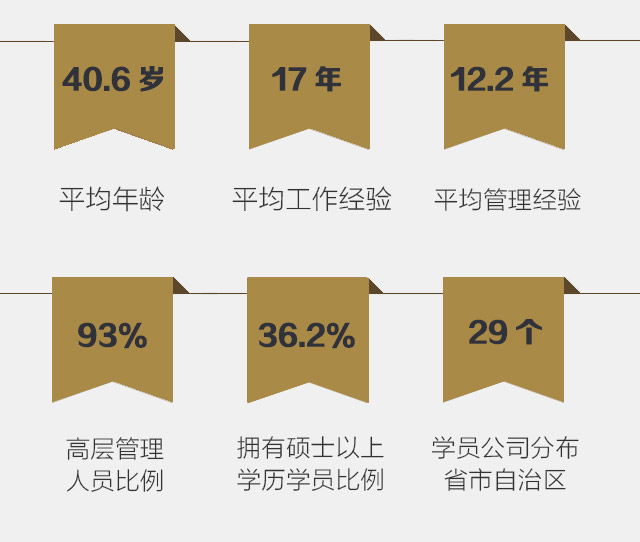
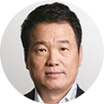
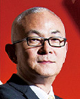
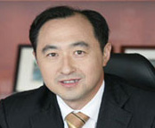
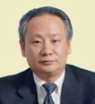
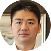
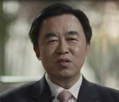

学员构成（2013级中文班）
学生故事
- 
- 
- 
- 
- 
- 
黄怒波 EMBA1996级校友，中坤集团 董事长
我最大的收获就是中欧把一个诗人改造成了一个现代的企业家。中欧的EMBA教育给了我另外一种价值观念，它完全改变了我。作为一个中欧人是很幸福的！
邓建民 EMBA1996级国际班校友，碧迪医疗器械(上海)有限公司 全球副总裁，大中华区总经理
我的一生经历了无数的改变，有人生的，有职业的。这些改变或艰难，或长远，但无一不将改变我多年养成的习惯，逼迫我尝试新的方法，承担未知的风险。在中欧的学习和积累，令我能更理性地看待改变，能更勇敢地直面改变，并能更有效地管理改变。以后每当我回首来时路，看到一路同行的都是那些敢于管理改变的。而那些等待观望、抱怨比较的曾经的同行者，都已远远地消失在身后的地平线。
王旭宁 EMBA2001级校友，九阳股份有限公司 （深圳证交所A股上市公司） 董事长
到中欧学习有两个目的：
一是把学习作为获得知识的渠道；
二是把学习作为获得“学识”的渠道。
“知识”和“学识”仅一字之差，但内涵各异。学识，不仅涵盖了对管理新知的汲取；还囊括与杰出精英的理念碰撞与经验交融。我抱着第一种目的来到中欧，却收获了第二种结果：在中欧，让自己的“草莽”创业变成科学管理企业，并建立了完整的创新机制。
徐航 EMBA2002级校友，深圳迈瑞生物医疗电子股份有限公司 （美国纽交所上市公司）董事长
中欧拥有一流的师资和教学，在高层管理教育方面享有盛名，再加上朋友的极力推荐，我最终选择了中欧。在中欧EMBA两年的学习，无疑是我人生中最重要的阶段，我收获了知识、理论和朋友。回顾中欧的学习，这是一件投资回报率很高的事情。中欧使我的事业生活更精彩!
想要把企业做大的人都应该到中欧这样的地方来学习，尤其是中国的企业，无论是创业者还是职业经理人，都需要不断更新知识和理念，将实践与理论相辅相成是无法一次性完成的。在世界级的竞争中，中国企业尤其需要多吸取国外企业的经验和教训，了解国际惯例。海外发展对中国企业意义重大，不走向海外就不能成为世界级的企业。学习和提升是必不可少的，而中欧就提供了这样一个很好的平台。

徐少春 EMBA2002级校友，金蝶国际软件集团有限公司（香港联合交易所上市公司） 董事局主席、行政总裁
在中欧，可以聆听国际一流教授的管理课程，也可以与中国一流企业CEO交流管理心得；在中欧，我为过去超过10年的企业管理实践找到了理论依据，并对未来充满信心。

刘强东 EMBA2009级校友，北京京东世纪贸易有限公司（美国纳斯达克上市公司） 董事局主席兼CEO、“2011 CCTV中国经济年度人物”、“2011年中欧善为奖个人奖”
中欧带给我开阔的国际化视野、强大的师生共享资源和友情。来自全球各国顶尖教授的认真调教，同学们激烈的思想碰撞，高水平的论坛及讲座......这些都使我得到升华。能够进入中欧学习，是我人生当中又一个很重要、很幸运的转折点。
王治卿 EMBA2011级校友，中国石化上海石油化工股份有限公司董事长、总经理
中欧的教学可以让没有学过MBA的人尽快提升，让学过MBA的人重新感悟；教授的水平国际一流，学校的氛围让人难以忘怀；同学的交往更让在商场、官场、名利场上浮躁的心灵回归平静与纯真。读中欧什么时间开始都不算迟。